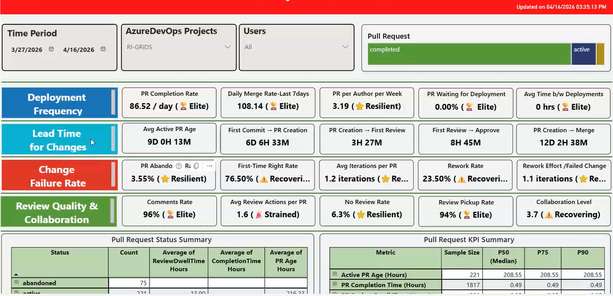
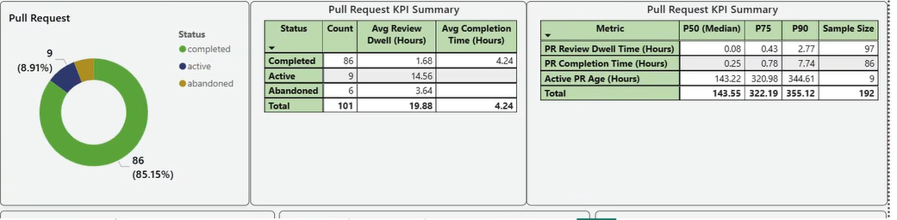
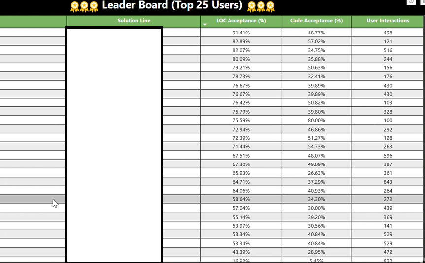

A practical guide to the KPIs that actually reveal whether GitHub Copilot — and your engineering system — is making developers more effective.
12 pages·GitHub & EngThrive metrics·SPACE framework · Live dashboards
Use arrows to navigate
02 / 12What to avoid
Eliminate unhelpful KPIs.
Measure outcomes — not outputs.
✕Lines of code
✕Team capacity
✕Team burndown
✕Team velocity
✕% code coverage
✕Completed hours
✕Original estimate
✕# of bugs found
03 / 12The four lenses
Metrics & KPIs
Customer usage
How much value are users getting?
Acquisition
Retention
Engagement
Satisfaction (NPS)
Feature usage
Pipeline throughput
How efficient is the DevOps process?
Time to build
Time to test
Time to deploy
Time to improve
Failed and flakey automation
Live-site health
How quickly can you detect and fix issues?
Time to detect, communicate, mitigate
Customer impact & support metrics
Incident prevention items
Aging live-site problems
SLA per customer
Employee health
How can you understand how employees are doing?
Monitor for burnout
Administer surveys to gather concerns
Track vacation time
04 / 12GitHub's framework
What metrics does GitHub track?
Developer happiness
Developers are enabled to do their best work and experience satisfaction.
Flow state experienceEngineering tooling satisfactionCopilot satisfaction
Quality
Ship secure, reliable, and easily maintainable code.
Change failure rateFailed deployment recovery timeCode security and maintainability
Velocity
Ship regularly and at a pace that can help you meet business needs.
Lead timeDeployment frequencyPRs merged per developer
05 / 12Microsoft's DevEx initiative
What metrics does our DevEx initiative (EngThrive) track?
S
ES Satisfaction (NSAT)
A measure of satisfaction that developers have with, "The engineering system you use at Microsoft."
C
Code Review Dwell
Capturing one aspect of collaboration, dwell is the delta between when one dev creates a Pull Request (PR) and another acts on it.
E
Time-To-First-PR
The time between when a new hire starts at Microsoft and when they complete their first PR.
E
PR Completion Time
The delta between when a PR is created and when it is successfully closed.
E
Uninterrupted Focus Time
The amount of uninterrupted time a dev has for deep thinking and creative problem solving.
06 / 12The evidence behind them
Why did we choose these metrics?
S
ES Satisfaction (NSAT)
Dissatisfied devs are 2× as likely to leave1.
C
Code Review Dwell
Fast code reviews make devs feel 20% more innovative2.
E
Time-To-First-PR
Devs with a fast first PR onboard 17% faster and have 15% longer retention1.
E
PR Completion Time
Fast PR completion loops lead to 10% higher total change throughput1.
E
Uninterrupted Focus Time
Devs with deep work time feel 50% more productive2.
Source 1: Microsoft internal data · Source 2: Microsoft, GitHub, and DX, 2024
07 / 12SPACE framework
SPACE: A framework for understanding developer productivity
The SPACE framework offers a new way of thinking about developer productivity.
S
Satisfaction and well-being
P
Performance
A
Activity
C
Communication and collaboration
E
Efficiency and flow
08 / 12Putting it together
SPACE framework in action
Level
Satisfaction & Well-beingHow fulfilled, happy, and healthy one is
PerformanceAn outcome of a process
ActivityThe count of actions or outputs
Communication & collaborationHow people talk and work together
Efficiency & flowDoing work with minimal delays or interruptions
IndividualOne person
Developer satisfaction
Retention*
Satisfaction with code reviews assigned
Perception of code reviews
Code review velocity
Number of code reviews completed
Coding time
# commits
Lines of code*
Code review score (quality or thoughtfulness)
PR merge times
Quality of meetings*
Knowledge sharing, discoverability (quality of documentation)
Code review timing
Productivity perception
Lack of interruptions
Team or groupPeople that work together
Developer satisfaction
Retention*
Code review velocity
Story points shipped*
# story points completed*
PR merge times
Quality of meetings*
Knowledge sharing, discoverability (quality of documentation)
Code review timing
Handoffs
SystemEnd-to-end work through a system (like a development pipeline)
Satisfaction with engineering system (e.g., CI/CD pipeline)
Code review velocity
Code review (acceptance rate)
Customer satisfaction
Reliability (uptime)
Frequency of deployments
Knowledge sharing, discoverability (quality of documentation)
Code review timing
Velocity/flow through the system
* Use these metrics with (even more) caution — they can proxy more things.
09 / 12Dashboard example — Overview
Metrics dashboard: at a glance
A single-pane view mapping DORA-aligned categories — deployment frequency, lead time, change-failure rate, and review quality — to concrete KPIs with health indicators.

10 / 12Dashboard example — Pull Requests
Pull request KPI summary
Drill into PR health: status distribution, review-dwell time, completion time, and percentile benchmarks — the signals that connect developer activity to delivery outcomes.

11 / 12Dashboard example — Leader Board
Copilot leader board
Top 25 users ranked by LOC acceptance rate, code acceptance rate, and interaction volume — useful for identifying champions and coaching opportunities, not individual performance reviews.

⚠️ Leaderboards should be used to celebrate adoption and identify mentors — never to rank or punish individual developers.